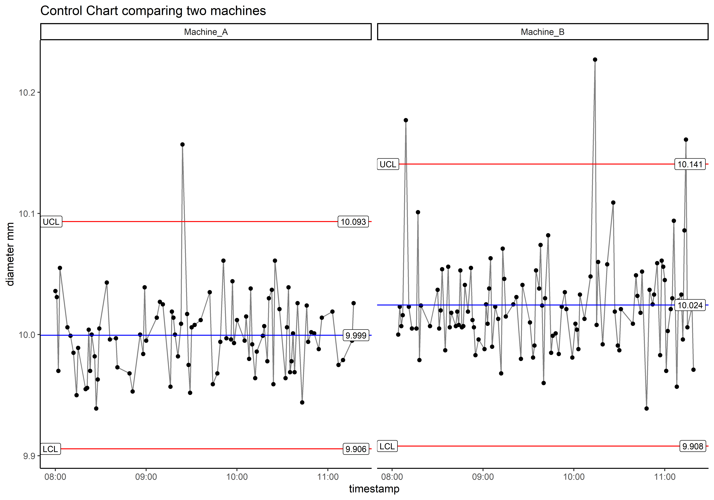

Show code
knitr::opts_chunk$set(
message = FALSE,
warning = FALSE,
echo = TRUE,
fig.width = 10, fig.height = 7, dpi = 300
)Ben Jepson
I am a big proponent of using SPC to solve real world problems. I’ve worked in industry as a food scientist and process engineer, and I have managed SPC for many facilities.
Control charts are valuable for putting variation in context - real processes move up and down and we need to know when to react and intervene in the process, and when to leave it alone. We want to be able to detect change and problems, but avoid intervening when it’s not necessary (called “tampering”). If a process is stable and we intervene (tamper) by changing a setting, we are actually increasing variation. It is best to leave a process alone unless we have evidence that something has changed.
This case study will use simulated data. We will look at two machines making the same part, with different operators, and a finished product measurement (diameter in millimeters).
I am writing this project in R and publishing with Quarto, if you want to see my code just click on “Show code”.
set.seed(42)
# Parameters for simulation
n_operators <- 5
n_obs <- 200
# Simulate dataset with measurement time, two machines, #n operators, and #n parts (products)
df <- data.frame(
timestamp = seq.POSIXt(from = as.POSIXct("2025-10-01 08:00"), by = "min", length.out = n_obs),
machine = sample(c("Machine_A", "Machine_B"), n_obs, replace = TRUE)
)
# Simulate measurements with machine-specific means
df$diameter_mm <- rnorm(n_obs, mean = ifelse(df$machine == "Machine_A", 10.00, 10.02), sd = 0.03)
# Inject a few unusual looking points
df$diameter_mm[sample(1:n_obs, 5)] <- df$diameter_mm[sample(1:n_obs, 5)] + rnorm(5, mean = 0.15, sd = 0.05)
# round the measurements after running simulation, assume production records 3 decimals
df$diameter_mm <- round(df$diameter_mm, 3)In manufacturing we would have these charts set up for real time viewing, ideally operators would plot the data immediately with each new measurement. Since this is a demonstration we are starting out with a dataset and looking at it. In the near future I plan to do some real time SPC demos to show how you might react in production.
Since I know we have multiple machines, we will compare them side by side.

If this were a production setting, control limits (UCL and LCL) would be calculated from a stable baseline period—representative of regular operations. For this analysis, limits are based on all observed data to assess process predictability. Once we understand the behavior, we can decide whether the process is ready for ongoing monitoring and use these limits moving forward.
Control charts reveal a lot at once. We see that Machine B has a higher average diameter than Machine A. Whether this difference is meaningful depends on engineering specifications and subject matter expertise. It’s a conversation to have, not a conclusion.
The width of the control limits (UCL minus LCL) is similar for both machines, just shifted with the mean. This suggests comparable variation, even if the averages differ.
Is this amount of variation acceptable? That’s a question for the engineers. It might meet customer requirements, or it might be causing problems. Either way, there’s potential for improvement by reducing variation within each machine. Whether that’s feasible or economical is part of the discussion.
We also see points outside the control limits on both machines. These are signals (indications that something happened or changed). In production, they should be investigated in real time to identify root causes and prevent the same problem from happening again.
Besides these clear signals, there are frequent dips and spikes. It’s not clear whether these are meaningful, but the variation looks excessive to me. The process runs tighter at times, suggesting it might actually be multiple “processes” mixed together (with different conditions). If we can identify the conditions that lead to better performance - periods of reduced variation and closer-to-target results - we can improve consistency.
For example, I notice some small clusters of points above and below the average. These patterns may or may not be significant, but if we can trace them to a root cause, we may unlock a knowledge leading to better control.
This is just the beginning, but it shows how control charts support diagnostic thinking and generate insights. In a single graph, we have:
Compared the average and variation of both machines
Generated insights that lead to discussion of other variables: operator, raw materials, environmental factors
Laid the foundation for ongoing monitoring and continuous improvement
In real production, there might be hundreds of control charts. The key is making data accessible so the right people can act at the right time. When data is visible and in context, it helps prevent process tampering, supports timely intervention, and reveals opportunities for improvement.